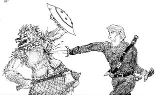

The ©Players Handbook is the defacto starting point for characters and races of the Steel Realms. The Grollen of the Steel Realms correlate to the Gnoll of DnD.
The Grollen of the realms a fierce, prideful peoples. They are descendants of ancient Gnolls but consider themselves a separate race. At one time they ranged across the entire realms, but their numbers are diminishing due to competition. Grollen warriors are some of the few who can stand toe-to-toe against the fearsome Ork. They are desired for their fighting prowess by the other races though little else. Wherever they go, a party, mad sounds, dancing, violence, and broken crockery is sure to follow…
Shrouded History: They were not as they once were. Grollen were once the mortal enemies of… all. Their origins are shrouded in mystery, but it is known that they once fought for the gods of evil and darkness and were as great a foe as the Orrish. But the Grollen walked from the dark and into the light. Their very countenance has changed from the ancient depictions of them.
Children of the Moon Mistress: They venerate Ezrilus the Moon Mistress as their patron goddess. In their past, the warlords ruled the clans and families, but since adopting (or rather being adopted) by their new patron, they have reorganized as a matriarchal society – their pack-mothers and seeress’ having control of their migrations and settlements. They channel their rage and fury into moots of howls, dance, feasting and wrestling.
Thirst for Blood: They have an uncontrollable compulsion of blood-lust. All Grollen still possess the deep spark of chaos and violence of their origins. They must make a DC 10 Sanity check when starting battle to avoid falling into a blood-lust frenzy wherein they forgo all tactical advantage in their desire for bloody hand-to-hand melee combat.
Dead on Your Feet: Grollen have a reputation as being very hard to kill. Their fierce loyalty and blood-lust allow them to hold off death to protect their tribe, kin or brethren. Grollen choosing to employ this must make a Constitution check each time they are hit, DC = 5 + the last damage they took; a natural 20 always succeeds. Success means they stay conscious and on their feet to the next round. There is no limit to the negatives HP from attacks, as long as the save is made. If the save is failed, or there are no more opponents, they die at the end of the round (no death saves).
Grollen Characters
Players should read the What PC’s should know for Steel Realms.
 Character Tools
Class Options:
Character Tools
Class Options: Class choice in Incarna is a role-playing challenge more than anything. While any class is possible in the right situation/background, race, culture, gender, regional issues, and social norms all factor into what path a character is able to take. A full Character Background and Perspective Stories can explain anything, even complete deviation from any setting or rule restrictions. However, it is also these constraining elements that give the most role-play challenge (and reward) and should be encouraged. Multi-classing after character creation has only the limits the story and setting provide (aside from any normal Ability limits).
- Barbarian (Berserker only); "touched" by the Moon Mistress
- Druid ( Moon Circle only) - The Grollen enjoy a special relationship as vital beast and servants of the Moon Mistress, allowing the rare few to undertake the specialized path of Druid.
- Fighter (Champion only) - Grollen lack the focus to be anything other than a Champion.
- Cleric - All Grollen priests venerate Ezrilus; those followers others must spend an additional Essence for a divine bond.
- Ranger (Hunter only) - It is the veneration of Ezrilus and Rastur giving the rare few Grollen Rangers their ability as Beast Masters (requiring a Character Trial), otherwise they use the Unearthed Arcana rules variant
Preferred: Grollen are typically FIGHTERS (Champion) or Barbarian (Berserker)
Armor and Weapons
- D8, Heavy, reach, Versatile (D12; min 13 STR)
Traits and Tactics
Typical Tactics: Grollen tactics are hampered by their Blood-Lust.
Defensive Tweaks: Parry, Dodge, add Resilience to armor or shield for PC foes. Tactics: Shield Wall
Offensive Tweaks: Improve weapon quality, use Luck, Piety, and Inspiration for PC foes. Tactics: Spear Wall
Magic Tweaks:
Health / HP
Movement
Attributes
- Charisma 7; -3
- Constitution 14; +2
- Dexterity 11
- Intelligence 9; -1
- Sanity 10; -1
- Strength 14; +2
- Wisdom 11
Traits
- Required:
- Large Bearing: Full HD for HP at first Level
- Acute Sense (smell); Perception checks based on Smell have Advantage
- Acute Sense (hearing); Perception checks based on Hearing have Advantage
- Darkvision; 30'
- Lore: Grollen; The Grollen pass on a rich oratory history to all members of the tribe.
- Options:
- Prohibited:
Proficiencies
- Required: Weapon: Flail, Shields (All)
- Options:
- Prohibited:
Character Backgrounds
Dog Soldier
Professional scouts for the armies and forces that maneuver across the lands of Gladnor, as well as the premiere tribal warriors. They are also the ones that serve in Northgate Garrison or in bands in the south sometimes working with the High Kings rangers.
Requirements: CHA 8; -1 Essence (they “tame” themselves); CON 14
Skills: Perception
Languages: Speak Gladnorean (Understandable level)
Combat Discipline The character gains their proficiency bonus on Sanity checks to resist Bloodlust.
Fighting Spirit The Grollen on campaign are renowned for their ability to take punishment and keep going and to come back from the brink of death. On any specific death save check (the final one resulting in death) which may kill them permanently, they gain their proficiency bonus.
Shield Bite: A Grollen on Rampage wearing less than Heavy Armor that successfully bites can choose instead to bite a shield of an opponent. That shield no longer counts in AC, and the Grollen and target both lose half any Dexterity AC adjustment until the Grollen lets go or the opponent spends an action to disarm the shield.

Culture and Society
Tribal Matriarchs: Grollen tribes are organized around a Matriarch.
The History of Grollen in the Realms
Broken Origins: Grollen were not always as they are now. It is hinted that once they were servants of evil, in the far reaches of history. Before the great leader Ker-Grol arose, his peoples were vile, evil killers. Dealers of death feared by all. It is said they were once even favored by the gods of evil and great fiends. This is rumor and myth only… but for the Grollen, it is an accepted fact. They believe to have lifted themselves up from the fiendish beasts they once were and are fiercely proud of their race’s accomplishments. But the dark stain of chaos and violence is still their weakness, and without a dark patron behind them to bind them together in purpose, they have seen their numbers decrease as the lands get settled and they must compete.
Into the Light: Once servants of darkness and evil, they threw off the yolk of their masters – Ker-Grol The Fierce slew the Ork champion Brutar Bloodgut and a personal fight, and walked away with his head. He then beat Quall Tolmarein to death, the priest of Everdark who had flogged them into battle for decades, with Brutar’s dented, helmet encased head. After, he ate his heart out of his chest in front of his stunned acolytes. His people turned upon their dark masters in numbers that day and walked out of the darkness in the light of, and howling under, the full moon. They were rewarded with the patronage of the Moon Mistress Ezrilus – who protected them from the curse of the Sun Bane and it is said tempered their evil with her love.